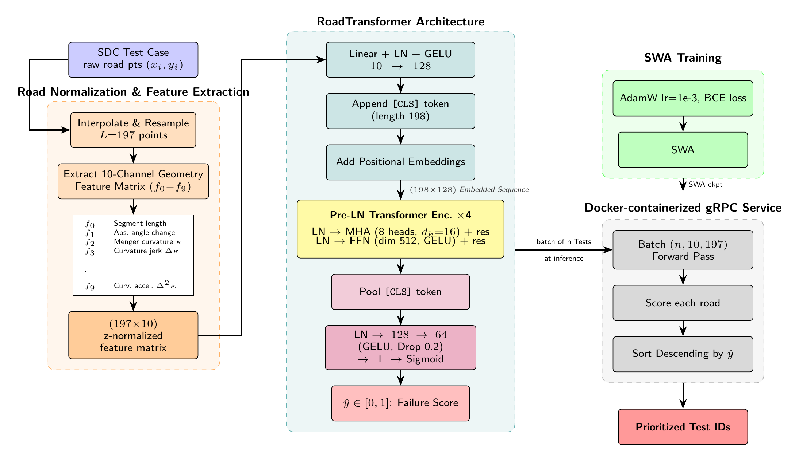

⇒ Không có tọa độ (x,y) tuyệt đối nào quyết định nhãn — chỉ hình dạng. Gợi ý cho ràng buộc bất biến.
Công trình liên quan · 06
Related Work: 3 hướng tiếp cận
1
Search-based / Diversity
Ý tưởng: GA / heuristic chọn tập test đa dạng hành vi (SO-SDC-Prioritizer, Greedy-diversity).
✓ Ưu: không cần nhãn, truyền thống SBST.
✗ Hạn chế: đa dạng ≠ lộ lỗi; đặc trưng phụ thuộc khung.
2
Feature-based ML
Ý tưởng: vài đặc trưng đường (góc, chiều dài) → mạng chuỗi gọn → rank (ITS4SDC: bi-LSTM, ICST'25).
✓ Ưu: rẻ, dễ giải thích.
✗ Hạn chế: ít đặc trưng, phụ thuộc khung, tinh chỉnh theo từng bench.
3
Deep: GNN / CNN / Transformer
Ý tưởng: học biểu diễn từ đồ thị đường / ảnh render / chuỗi điểm (GNN, ResNet, RoadFury).
✓ Ưu: APFD cao nhất (RoadFury 0.804).
✗ Hạn chế:không bất biến — xoay / lấy mẫu là điểm trôi.
Khoảng trống: chưa phương pháp nào đảm bảo bất biến với phép xoay / tần số lấy mẫu — tất cả dựa vào augmentation (xấp xỉ) hoặc đặc trưng phụ thuộc khung.
Công trình liên quan · 07
Related Work: Tổng hợp & Khoảng trống
Method
Approach
APFD
Bất biến
Random
—
0.493
✗
GNN
graph
0.533
✗
ResNet-50
image
0.572
✗
SO-SDC-Prioritizer
GA (TOSEM'23)
0.765
✗
ITS4SDC
LSTM (ICST'25)
0.781
✗
Greedy-diversity
heuristic
0.795
✗
RoadFury
Transformer+SWA
0.804
✗
SE2RoadNet
SE(2)-equiv.
0.805
✓ Δ=0
APFD trên 956 test OOD (30 trials). Các baseline tái lập trong cùng harness; RoadFury & SE2RoadNet là của nhóm.
Hai trục độc lập
SE2RoadNet thêm một trục đảm bảo mới chứ không chỉ tăng APFD.
Khoảng trống: cùng một con đường — chỉ khác hướng đặt hoặc số điểm lấy mẫu — không được làm điểm số thay đổi. Chưa method nào đảm bảo điều đó.
02
ROADFURY → SE2ROADNET02 / 05
Phần 02
RoadFury
Phương pháp nền tảng của nhóm: Transformer + SWA + Focal
RoadFury · 08
RoadFury: Pipeline nền tảng

Chuẩn hoá & trích đặc trưng → RoadTransformer → SWA → inference (chấm điểm, sắp xếp giảm dần). Chi tiết 2 điểm mù ở slide kế.
Xoay đường ⇒ baseline trôi điểm, SE2RoadNet bất biến
ITS4SDC (Δ=0.057)SE2RoadNet (Δ=0.0000)
Xoay
ITS4SDC
SE2RoadNet
0°
0.7810
0.8047
+30°
0.7240
0.8047
+60°
0.7518
0.8047
+90°
0.7396
0.8047
+180°
0.7334
0.8047
-45°
0.7627
0.8047
Δ
0.0570
0.0000
Không phải "trong sai số"
6 góc xoay, APFD bằng nhau đến từng bit float (=0, không phải ~10⁻³): pipeline 7 kênh trả vector pixel-identical sau xoay ⇒ logit y nguyên.
⇒ Lý thuyết được xác minh bằng thực nghiệm, không cần nói "xấp xỉ".
Đánh giá · 19
Bảng xếp hạng: so với 8 baselines
Bảng xếp hạng APFD (956 test OOD, 30 trials)
ngẫu nhiên
LLM zero-shot
0.487
Ngẫu nhiên
0.493
GNN (đồ thị)
0.533
ResNet-50 (ảnh)
0.572
SO-SDC-Prioritizer (GA)
0.765
ITS4SDC (ICST'25)
0.781
Greedy-diversity
0.795
RoadFury (nền tảng)
0.804
SE2RoadNet (của nhóm)
0.805
Phương pháp
AUC
APFD
RoadFury
0.917
0.804
SE2RoadNet
0.934
0.805
Đọc bảng
SE2RoadNet ngang APFD baseline tốt nhất, nhưng tăng AUC (+0.017) và thêm bảo chứng Δ=0 mà không method nào có ⇒ cải thiện theo nghĩa Pareto.
LLM zero-shot & Greedy-diversity: baseline nhóm tái lập trong cùng harness.
Không đánh đổi: giữ APFD đỉnh, tăng AUC, và là phương pháp duy nhất bất biến SE(2) tuyệt đối.
Đánh giá · 20
AUC vs APFD: vì sao tách bạch?
AUC đo khả năng phân loại PASS/FAIL trên từng cặp — không quan tâm thứ hạng tuyệt đối.
APFD đo tốc độ lộ lỗi theo thứ tự chạy — chính là cái Competition tối ưu.
→
Trong gần như mọi thí nghiệm của nhóm, AUC và APFD phân kỳ: tăng AUC không đảm bảo tăng APFD.
→
SE2RoadNet tăng AUC (0.917 → 0.934) trong khi APFD giữ đỉnh (~0.805).
⇒
Khi báo cáo phải nói rõ metric nào đang được tối ưu cho tình huống nào.
SE2RoadNet · cùng 1 mô hình
AUC tăng, APFD gần như phẳng
Takeaway: Không gộp AUC và APFD thành "một điểm tốt hơn" — chúng đo hai thứ khác nhau.
05
ROADFURY → SE2ROADNET05 / 05
Phần 05
Hạn chế & Hướng phát triển
nhìn thẳng điểm yếu · bốn hướng mở rộng
Hạn chế · 21
Hạn chế: nhìn thẳng vào điểm yếu
Về chỉ số
AUC và APFD phân kỳ: AUC cao hơn không kéo theo APFD cao hơn — phải lập luận cẩn thận metric nào quan trọng khi nào.
Listwise loss chưa tăng APFD trung bình: chỉ giảm σ ⇒ đóng góp 'ổn định', không phải headline.
Trần APFD ở bench FAIL cao: ví dụ 95% FAIL ⇒ APFD ~ 0.52 là ceiling, không phải thất bại.
Về phương pháp
Conformal an toàn còn dở: v1 valid-nhưng-vô nghĩa, v2 informative-nhưng-invalid; cần v3 mới ship.
Dịch phân phối chưa đóng: IRM / TENT chưa thu hẹp gap SensoDat→Competition (negative đã biết).
Bất biến lấy mẫu là xấp xỉ: resolution probe Δ ~ 0.0012 (rất nhỏ) — chưa exact như phép xoay.
Takeaway: Bất biến xoay là exact; các đảm bảo khác (resolution, conformal) vẫn đang hoàn thiện — báo cáo trung thực thay vì giấu.
Hướng phát triển · 22
Hướng phát triển
1
Tổng quát hóa đa benchmark
Một công thức, 8+ benchmark công khai (OOB, SDC-Scissor, sdc-travel...) — APFD không tinh chỉnh theo từng bench.
2
An toàn có bảo chứng (Conformal v3)
Chặn dưới prefix-APFD vừa valid vừa non-vacuous; audit tỉ lệ vi phạm độ cong.
3
Bất biến lấy mẫu exact
RoPE-1D trên s_norm thay RFF bias ⇒ rẻ hơn và tiến tới resolution-Δ = 0.
4
SSL vật lý (physics-informed)
Pretext task gắn với độ cong/jerk để học biểu diễn nền — thay SSL hình học ngây thơ (chuyển kém).
Mục tiêu: từ một baseline bất biến cho SDC → công thức chung bất biến & audit-readable cho mọi benchmark.
Tham khảo
Tài liệu tham khảo
[1] C. Birchler, C. Rohrbach, T. Kehrer, S. Panichella. SensoDat: Simulation-based Sensor Dataset of Self-driving Cars. MSR, 2024. (nguồn dữ liệu)
[2] C. Birchler, S. Khatiri, B. Bosshard, A. Gambi, S. Panichella. Single and Multi-objective Test Cases Prioritization for Self-driving Cars in Virtual Environments. ACM TOSEM, 2023.
[3]ICST/SBFT Tool Competition — Self-Driving Car Testing (Cyber-Physical Systems). 2023–2025. (giao thức APFD)
[4] G. Rothermel, R. Untch, C. Chu, M. Harrold. Prioritizing Test Cases for Regression Testing. IEEE TSE, 2001. (định nghĩa APFD)
[5] A. Vaswani et al. Attention Is All You Need. NeurIPS, 2017.
[6] T.-Y. Lin, P. Goyal, R. Girshick, K. He, P. Dollar. Focal Loss for Dense Object Detection. ICCV, 2017.
[7] P. Izmailov et al. Averaging Weights Leads to Wider Optima and Better Generalization (SWA). UAI, 2018.
[8] T. Cohen, M. Welling. Group Equivariant Convolutional Networks. ICML, 2016. (nền tảng bất biến nhóm)
[9] A. Rahimi, B. Recht. Random Features for Large-Scale Kernel Machines (RFF). NeurIPS, 2007.
[10] A. Angelopoulos, S. Bates. A Gentle Introduction to Conformal Prediction. 2021. (hướng an toàn)
RoadFury & SE2RoadNet là phương pháp của nhóm; các baseline khác được tái lập trong cùng harness.